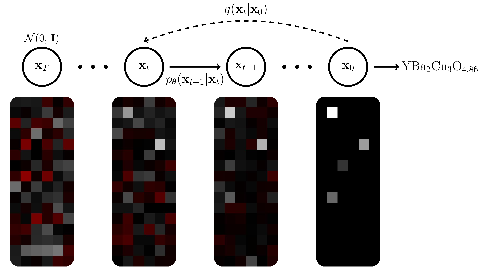
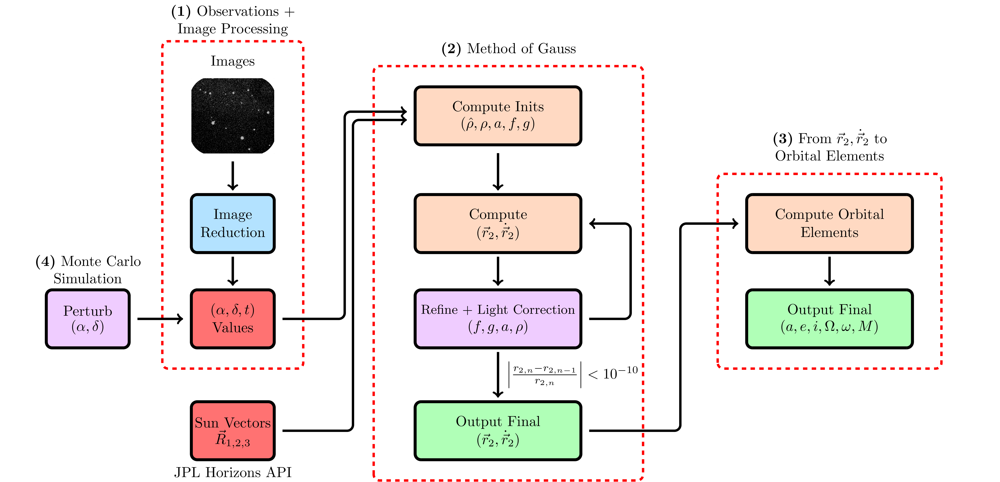
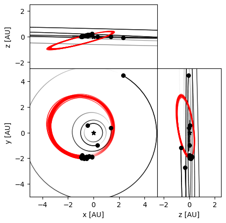
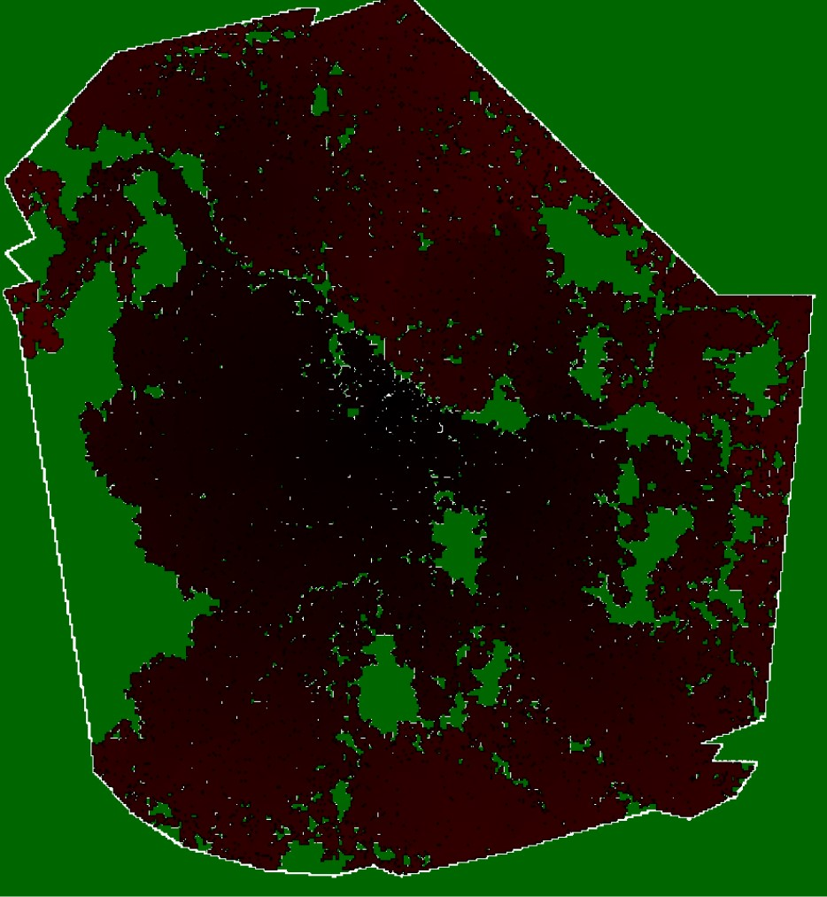

I've worked on a couple projects in the past — most of them have to do with physics. Here's a brief summary below:
Contents:
In this project, I applied diffusion models — a type of generative AI model that is behind popular image generators such as Dall-E 2 and Stable Diffusion — for superconductor discovery. In particular, this work focused on applying conditional diffusion models (with ILVR) to computationally discovery potential new families of superconductors for the first time. In the past, computational approaches to superconductor discovery could only generate new superconductors from known families and were unable to generate any new families — this work resolves that limitation.
Beyond generating new families of hypothetical superconductors for the first time, this model also enables researchers to extrapolate a family of potential superconductors from any single new one they discovery. The model is a powerful tool for accelerating superconductor discovery. I conducted this research with Prof. Dordevic (UAkron), who kindly accepted to mentor me on this project after I cold-emailed him.
This work was published as:
Yuan, S., Dordevic, S.V. Diffusion models for conditional generation of hypothetical new families of superconductors. Sci Rep 14, 10275 (2024). https://doi.org/10.1038/s41598-024-61040-3
Additional Details. For this work, I was named a 2024 Davidson Fellow Laureate ($50k scholarship) and a Regeneron Science Talent Search (STS) Semifinalist. This work will also be featured in an oral presentation at the 2025 APS Global Physics Summit.
As part of the Summer Science Program (SSP) in astrophysics, I worked on a project on determining the orbit of mars-crossing asteroid 699 Hela (aka A910 LC) together with two other teammates. We observed the asteroid over several weeks with the telescope at the Sommers-Bausch Observatory at CU Boulder and used this data to determine the orbital elements.
After collecting the observational data, we employed the Method of Gauss (MoG) to determine the orbital elements of the asteroid from three best observations. After computing the orbital elements, we ran Monte Carlo simulations to determine uncertainties and propogated the elements forward millions of years to predict the future of the asteroid.
At SSP, beyond the OD project, I worked on weekly problem sets with friends and played a lot of ping pong! The code for my OD project can be found here.
You can read our final report at:
M Judkins-Cooper*, N Marabito*, S Yuan*. Orbit Determination of Mars-Crossing Asteroid 699 Hela. SSP (2024). https://github.com/sdkyuanpanda/SSP-CUB-2024/blob/main/ssp_team08_final_report-1.pdf
Together with my friend Armaan Gomes, I worked on a science fair project on firebreak placement optimization with genetic algorithms in sophomore year of high school. In this work, we built a cellular-automata based wildfire simulation with the Alexandridis model that was integrated with real-world data. And, with this, we applied genetic algorithms to compute realistic and effective firebreak constructions.
While a prototype model, our work presents a possible new method for efficient and effective firebreak construction strategy conceptualization — and further development, such as with the integration of additional data, may produce a truly useful real-time assistive tool for wildfire-fighting efforts. The code for this work is publicly assessible and can be found here.
Additional Details. This work won First Place in the Computer Science category at the 2023 California Science and Engineering Fair (CSEF).